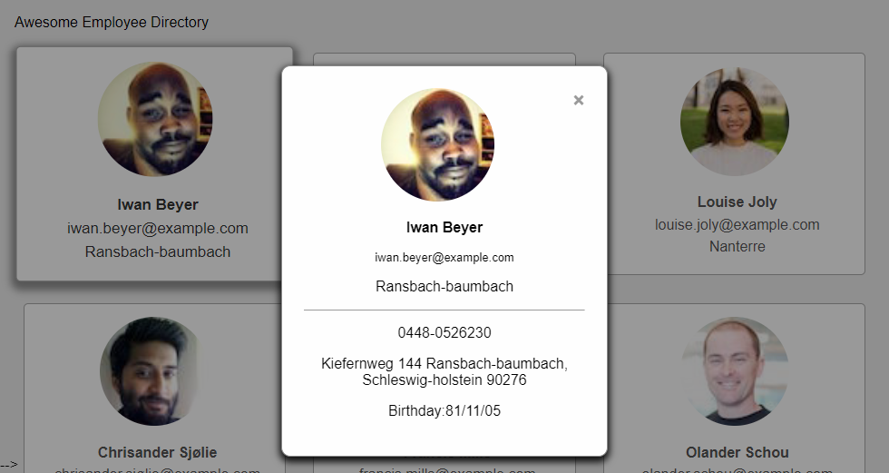

A Registration Form
In this project, you'll build a responsive,
mobile-friendly registration form using a wide variety of HTML form input types and attributes.
Using the supplied mockup files, you'll build a mobile and desktop version of the form using media queries,
and a "mobile-first" approach.

Web Style Guide
In this project, we’ve provided an index.html file with a set of class names already defined.
You will be responsible for creating rules to style the web page using each of those class names.
This will provide you with a set of classes that you can then use in other projects to apply similar styles.
You'll create a sass project to do this, using partials, variables, extends, and mixins to apply the styles
and classes to the style guide page.

Photo Gallery
In this project, you will create an interactive photo gallery using JavaScript and jQuery.
Thumbnails and photos will be provided with descriptions.
At the top of the page, you'll have a search area where photos will hide and show depending on user input.
When the user clicks on a thumbnail, the photo will display in a lightbox.

Game Show App
This project shows the front page of a marketing website meant
for a specific business I'm interested in.

Dash Board App
In this project, you'll take a mockup and a few icons and build a beautiful,
web dashboard complete with JavaScript-driven charts and graphs.
You only need to take the design and create the HTML, CSS and JavaScript functionality for this one page

Online Employee Directory
Awesome Startup is a distributed company with employees working all over the world.
They need a smart way to for employees to share contact information with each other.
In this project, you’ll use the Random User Generator API (https://randomuser.me/)
to grab information for 12 random “employees,”
and use that data to build a prototype for an Awesome Startup employee directory.
You’ll request a JSON object from the API using fetch and
parse the data so that 12 employees are listed in a grid with their thumbnail image, full name, email, and location.